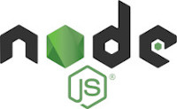
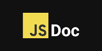

INSTALACIÓN Y PREPARACIÓN DE JSDOC

Node js
Descargar node js
- Entrar en nodejs y seguir los pasos citados en esta página
- Si da algun error de enviroments variables, hay que cambiar las variables de entorno.
Esto lo hacemos abriendo las variables de entorno, creamos una nueva, la llamamos NODE.JS y le ponemos la ruta de donde se haya instalado node.js
-
Instalar la ultima versión de npm que es el administrador de paquetes de node.js con el comando:
npm install -g npm@latest
-
Par finalizar crearemos una carpeta y en ella crearemos un index.js
Abriremos con el visual studio code la carpeta y la terminal y pondremos el siguiente comando:
npm init -y
Y con esto se crea un nuevo proyecto de node y nos crea el archivo packaje.json

JSDoc
Para instalar JSDOC
- En la misma terminal del visual studio code pondremos el siguiente comando:
npm i jsdoc
Esto lo que hace es que descarga los módulos y los añade a una dependencia en el archivo package-lock.json
-
Creamos un archivo en la carpeta que se llame jsdoc.json, el cual sera el archivo de configuración del jsdoc y en el cual copiaremos esto:
{
"plugins": [],
"source": {
"include": ["src"], //carpeta de la que va a leer lor archivos
"includePattern": ".+\\.js(doc|x)?$", //leera los archivos con extension .js
"excludePattern": "(node_modules|docs)" //lo que no va a leer seran dos carpetas
},
"templates": { //que va a generar la documentacion
"cleverlinks": false,
"monospacelinks": false
},
"opts": {
"recurse": true, //para que pueda leer los archivos recurrentemente
"destination" : "./docs", //carpeta de destino de los archivos
"template": ""
}
}
Los comentarios no los introduzcais!!!! Es solo información
-
Crear una carpeta src que sera la carpeta desde la que va a leer los archivos este json
y meter el archivo index.js dentro de esta carpeta que sera donde metamos el proyecto que queramos documentar.
-
En la terminal voy a decirle que archivo de configuracion quiero que use, es el que hemos creado (jsdoc.json) con los comandos:
jsdoc -c jsdoc.json
npx jsdoc -c jsdoc.json
-
En el archivo package.json en la parte de scripts, a parte de test añadimos otro mas
"docs": jsdoc -c jsdoc.json
Esto va aser el comando que usaremos para generar la documentación. El comando sera este:
npm run docs
Esto generara una carpeta docs.
-
Finalmente en la carpeta de docs tendreis un index.html, si abris ese index os abrira una pagina con toda la documentación que habeis creado.